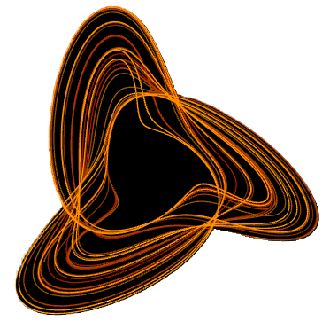

Nasser Mohammed
Graduate Researcher | Electrical Engineering and Applied Mathematics
I am a Master's student in Electrical Engineering and Applied Mathematics at Louisiana State University with a focus on control, estimation, and dynamical systems, with applications to autonomous and cyber-physical systems. My work centers on building systems that integrate sensing, computation, and feedback to operate reliably in uncertain, real-world environments.
Currently, I am a Graduate Research Assistant in the INFRAMAT-X Lab. My research involves developing computer vision and control frameworks for underwater 3D concrete printing, including designing sensing pipelines, extracting system state information, and implementing control strategies to improve performance in challenging conditions.

Halvorsen System Phase Space